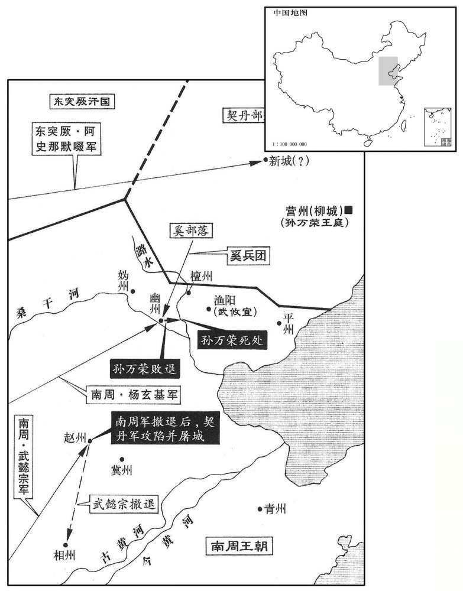

公元697年资治通鉴：本年记事、原文与白话对照
按原书编年位置阅读；追叙和史论不等于本年发生的事件。白话采用所据译本，缺译不以生成译文补齐。
卷206 · 本年记事
公元697年 · 唐则天顺圣皇后神功元年
神功元年〔（丁，酉、六九七）时以契丹破灭，九鼎就成，以九月大享，改元为神功。〕
上传原文的注释括号有异常，字符原样保留；无法可靠划分的段落默认全文显示。
本年事件索引（现代整理）
- 武则天在通天宫祭祀
- 默啜攻灵州，许钦明呼救求取粮食和墨以传递计策
- 刘思礼听信相术，与綦连耀密谋谋反
- 刘思礼供出李元素等三十六家名士，均遭族诛
- 武懿宗诱使刘思礼牵连朝士后将他处死
- 来俊臣诬告告密者吉顼，吉顼获召见免祸
- 樊惎遭诬处死，其子剖腹诉冤，刘如璇被流放
- 张易之、张昌宗兄弟受武则天宠幸
- 默啜侵扰胜州，被安道买击退
- 娄师德任凤阁侍郎、同平章事
- 王孝杰、苏宏晖率十七万军在东硖石谷败于契丹
- 王孝杰追击契丹坠崖身亡，苏宏晖逃走
- 武攸宜闻唐军覆没不敢进兵，契丹攻掠幽州
- 阎知微谄事默啜，田归道据理抗辩被扣留
- 武则天将六州突厥降户及物资交给默啜
- 田归道劝武则天不要信任默啜的和亲承诺
- 九鼎铸成，置于通天宫
- 王及善留任内史，向武则天陈述治乱要务
- 武懿宗、娄师德率军讨伐契丹
- 朱前疑因贪求官阶被武则天罢黜归乡
- 武承嗣强留乔知之爱妾碧玉，碧玉投井自尽
- 来俊臣强夺士民妻妾，李昭德遭诬下狱
- 来俊臣图谋诬告诸王和太平公主，终于下狱
- 李昭德、来俊臣同日被处死，百姓痛快来俊臣之死
- 来俊臣诬告斛瑟罗谋反以索取其歌舞侍女
- 来俊臣败亡后，受其请托的选官官员自首获赦
- 侯敏听妻劝告远离来俊臣，免受牵连
- 武则天召用于安远，擢升吉顼
- 宗楚客同任平章事
- 武懿宗畏惧契丹退守相州，契丹屠掠赵州
- 孙万荣被家奴杀死
- 默啜攻破契丹新城，俘获契丹家属
- 契丹军溃败，孙万荣被家奴杀死，余众投降
- 武承嗣、武三思同任凤阁鸾台三品
- 狄仁杰等安抚河北，王求礼反对武懿宗滥杀归降者
- 昆明部落归附，唐朝设置窦州
- 武承嗣、武三思罢去政事
- 武攸宜凯旋，武则天采纳王求礼意见赦免胁从百姓
- 姚暃被贬为益州长史，豆卢钦望任文昌右相
- 武则天祭祀通天宫并大赦改元
- 娄师德代理纳言
- 姚元崇劝武则天承认酷吏制造冤案
- 魏元忠复任肃政中丞
- 狄仁杰、杜景俭同任平章事
- 狄仁杰上疏反对远征扩张，主张休兵安民
- 李峤主持铨选，设置数千员外官
- 武则天调整历法，将本月改为闰月

本年形势与背景参考图
正月，凹亥朔，太后享通天宫。
正月，己亥朔（初一），太后在通天宫祭祀。
突厥默啜寇灵州，以许钦明自随。〔钦明为默啜所禽，见上卷上年。厥，九勿翻。〕钦明至城下大呼，求美酱、梁米及墨，〔泛胜之曰：梁是秫粟。陶弘景曰：凡曰梁米皆是粟类，惟其牙头色异为分别耳。有青、黄、白三种，青梁味短色恶，不如黄白梁。呼，火故翻。〕意欲城中选良将引精兵、夜袭虏营，〔将，即亮翻。〕而城中无谕其意者。
突厥阿史那默啜侵扰灵州，带着俘获的唐将许钦明。许钦明到州城下大喊，要求给好酱、梁米和墨，意思是让城中选良将、领精兵，夜袭敌人营垒，而城中竟没有人能领会他喊话所隐含的意思。
箕州刺史刘思礼学相人于术士张憬藏，憬藏谓思礼当历箕州，位至太师。思礼念太师人臣极贵，非佐命无以致之，乃与洛州录事参军綦连耀谋反，〔相，悉亮翻；下相术同。憬，居永翻。唐京都录事参军，正七品。綦连，虏姓也。魏收官氏志，西方诸姓有綦连氏。〕阴结朝士，〔朝，直遥翻。〕托相术，许人富贵，俟其意悦，因说以「綦连耀有天命，〔说，输芮翻。〕公必因之以得富贵。」凤阁舍人王鲇兼天官侍郎事，〔鲇，其据翻。〕用思礼为箕州刺史。
箕州刺史刘思礼向术士张憬藏学相面，张憬藏说刘思礼将经历箕州刺史，做到太师的职位。刘思礼心想太师在大臣中非常显贵，不是君主的辅佐大臣不能担任，便与洛州录事参军綦连耀图谋造反，秘密勾结朝廷官员，利用相面的办法，为别人预言富贵，等把人说得高兴的时候，然后便说：“綦连耀将授命于天，您一定要依靠他才能获得富贵。”凤阁舍人王兼管天官侍郎事，便任用刘思礼为箕州刺史。
明堂尉吉〔【章：十二行本「吉」上有「河南」二字；乙十一行本同；孔本同；张校同。】〕顼闻其谋，以告合宫尉来俊臣，〔高宗总章元年，分西京万年县为明堂县；永昌元年，改东都河南县为合宫县。未白曰：明堂县理京兆城中永乐坊。〕使上变告之。〔上，时掌翻；下同。〕太后使河内王武懿宗推之。懿宗令思礼广引朝士，许免其死，凡小忤意皆引之。〔忤，五故翻。〕于是思礼引凤阁侍郎同平意事李元素、夏官侍郎同平章事孙元亨、知天官侍郎事石抱忠、刘奇、给事中周譒〔譒，补过翻。〕及王鲇兄冱州刺史籝、弟监察御史助等，〔籝，弥兖翻。监，古衔翻。〕凡三十六家，皆海内名士，穷楚毒以成其狱，壬戍，皆族诛之，亲党连坐流窜者千余人。
明堂县尉吉顼知道刘思礼的阴谋，报告了合宫县尉来俊臣，让来俊臣向朝廷密告他谋反。太后派河内王武懿宗审问他，武懿宗命令刘思礼广泛牵连朝廷官员，答应可以赦免他的死罪，凡对武懿宗稍不顺从的人都牵连上。于是刘思礼牵连凤阁侍郎同平章事李元素、夏官侍郎同平章事孙元亨、执掌天官侍郎事务的石抱忠、刘奇、给事中周及王的哥哥泾州刺史王、弟弟监察御史王助等，共三十六家，都是海内知名人士。严刑拷打逼供定案后，壬戌（二十四日），他们全都被灭族。他们的亲戚因株连而被流放的有一千多人。
初，懿宗宽思礼于外，使诬引诸人。诸人既诛，然后收思礼，思礼悔之。懿宗自天授以来，太后数使之鞫狱，喜诬陷人，〔数，所角翻。喜，许记翻。〕时人以为周、来之亚。
当初，武懿宗表面向刘思礼表示宽大，以便让他诬告牵连别人。等到被牵连的人处死后，他便逮捕刘思礼，刘思礼后悔了。武懿宗自天授年间以来，太后多次派他审讯囚犯，他喜欢诬陷人，当时人认为他是周兴、来俊臣第二。
来俊臣欲擅其功，复罗告吉顼；〔复，扶又翻；下是复、宗复同。〕顼上变，得召见，仅免。〔见，贤遍翻。〕俊臣由是复用，而顼亦以此得进。
来俊臣想独得这次事件的告发之功，又罗织罪名密告吉顼；吉顼因密告别的谋反事件获得太后召见，才得以幸免。来俊臣因此又得到重用，而吉顼也借此得以升官。
俊臣党人罗告司刑府史樊惎谋反，诛之。〔唐制，大理寺有府二十八人，史五十六人。惎，渠记翻。〕惎子讼冤于朝堂，〔朝，直遥翻。〕无敢理者，乃援刀自刳其腹。〔授，于元翻。〕秋官侍郎上邽刘如璇见之，〔上邽县，汉属陇西郡，古邽戎邑也，后汉属汉阳郡。后魏讳珪，改名上封，属天水郡；隋复旧，唐属秦州。璇，似宣翻。〕窃叹而泣。俊臣奏如璇党恶逆，下狱，处以绞刑；〔下，遐嫁翻。处，昌吕翻。〕制流瀼州。
来俊臣的党徒罗织罪名告发司刑府史樊谋反，樊被处死。他的儿子诉冤于朝堂，无人敢受理，便抽刀自己剖腹。秋官侍郎上人刘如看见了，偷偷叹息流泪。来俊臣便上奏说刘如偏袒恶逆罪犯，他于是被逮捕入狱，判处绞刑；太后下令改判他流放州。
尚乘奉御张易之，行成之族孙也，〔张行成事太宗。〕年少，美姿容，善音律。〔少，诗昭翻。〕太平公主荐易之弟昌宗入侍禁中，昌宗复荐易之，兄弟皆得幸于太后，常傅朱粉，衣锦绣。昌宗累迁散骑常侍，〔散，悉亶翻。骑，奇寄翻。〕易之为司卫少卿；〔龙朔改卫尉为司卫，光宅因之。〕拜其母臧氏、韦氏为太夫人，赏赐不可胜纪，〔胜，音升。〕仍敕凤阁侍郎李迥秀为臧氏私夫。迥秀，大亮之族孙也。〔李大亮历事高祖、太宗。〕武承嗣、三思、懿宗、宗楚客、晋卿皆候易之门庭，争执鞭辔，谓易之为五郎，昌宗为六郎。
尚乘奉御张易之，是张行成的同族侄孙，年轻、貌美，精通音律。太平公主推荐张易之的弟弟张昌宗入侍宫中，张昌宗又推荐张易之，兄弟二人都得到太后的宠幸，常涂脂抹粉，穿华丽的衣服。张昌宗连续升官后任散骑常侍，张易之任司卫少卿；授给他们的母亲臧氏、韦氏太夫人的封号，赏赐多得数不清，又命令凤阁侍郎李迥秀为臧氏的姘夫。李迥秀，是李大亮的同族侄孙。武承嗣、武三思、武懿宗、宗楚客、宗晋卿等人，时常等候在张易之家门口，争着为他执马鞭牵马，称张易之为五郎，张昌宗为六郎。
癸亥，突厥默啜寇胜州，平狄军副使安道买击破之。〔代州北有一武军，调露元年改曰神武军，天授二年改曰平狄军。使，疏吏翻。〕
癸亥（二十五日），突厥阿史那默啜侵扰胜州，唐朝平狄军副使安道买将他们打败。
甲子，以原州司马洛师德守凤阁侍郎、同平章事。
甲子（二十六日），朝廷任命原州司马娄师德守凤阁侍郎、同平章事。
春，三月，戊申，清边道总管王孝杰、苏宏晖等将兵十七万与孙万荣战于沺硖石谷，唐兵大败，孝杰死之。〔将，即亮翻。〕
春季，三月，戊申（十二日），清边道总管王孝杰、苏宏晖等领兵十七万与契丹孙万荣战于东硖石谷，唐兵大败，王孝杰战死。
孝杰遇契丹，帅精兵为前锋，〔帅，读曰率。〕力战。契丹引退，〔契，欺讫翻，又音吃。〕孝杰追之，行背悬崖；〔背，蒲妹翻。〕契丹回兵薄之，〔薄，伯各翻。〕宏晖先遁，孝杰坠崖死，将士死亡殆尽。〔考异曰：朝野佥载云：「孝杰将四十万众，被贼诱退，逼就悬崖，渐渐挨排，一一落间，坑深万丈，尸与崖平，匹马无归，单兵莫返。」张鷟语事多过其实，今不尽取。〕管记洛阳张说驰奏其事。太后赠孝杰官爵，遣使斩宏晖以徇；使者未至，宏晖以立功得免。〔说，读曰悦。使，疏吏翻；下同。〕
王孝杰和契丹人遭遇，率领精兵为前锋，奋力作战。契丹人后退，王孝杰追击，行进到背靠悬崖的地方，契丹回兵逼近他，苏宏晖首先逃跑，王孝杰坠崖身死，战士几乎全部战死。管记洛阳人张说迅速奏明上述情况。太后追赠给王孝杰官爵，派遣使者前去将苏宏晖斩首示众；使者还未到达，苏宏晖因立功得以免死。
武攸宜军渔阳，〔渔阳，秦右北平郡所治也。隋为渔阳县，属幽州，在幽州东二百一十里。〕闻孝杰等败没，军中震恐，不敢进。契丹乘胜寇幽州，攻陷城邑，剽掠吏民，攸宜遣将击之，不克。〔剽，匹妙翻。将，即亮翻。〕
武攸宜进军至渔阳，听说王孝杰等全军覆没，军中震惊，不敢前进。契丹人乘胜侵扰幽州，攻陷城池，劫掠官吏和百姓，武攸宜派部将攻击他们，不能取胜。
阎知微、田归道同使突厥，册默啜为可汗。〔可，从刊入声。汗，音寒。〕知微中道遇突厥使者，辄与之绯袍、银带，且上言：「虏使至都，宜大为供张。」〔上，时掌翻下同。供，他用翻。张，知亮翻。〕归道上言：「突厥背诞积年，方今悔过，宜待圣恩宽宥。今知微擅与之袍带，使朝廷无以复加；〔背，蒲妹翻。朝，直遥翻；下同。复，扶又翻。〕宜令反初服以俟朝恩。〔令，力丁翻。初服，突厥遣来所被之服。〕又，小虏使臣，不足大为无张。」太后然之。知微见默啜，舞蹈，吮其靴鼻；〔吮，如兖翻。〕归道长揖不拜。默啜囚归道，将杀之，归道辞色不挠，责其无厌，〔挠，奴教翻。厌，于盐翻。〕为陈祸福。〔为，于伪翻。〕阿波达干元珍曰：「突厥官二十八等，自设至达干，皆世其官。此即阿史德元珍。〕「大国使者，不可杀也。」默啜怒稍解，但拘留不遣。
阎知微、田归道一同出使突厥，封阿史那默嗓为可汗。阎知微中途遇到突厥使者，即送给他红袍、银带，并且上奏说：“突厥使者到达都城，应当大设帷帐迎接。”田归道上奏说：“突厥违反朝命不受节制多年，现在才悔过，应等待陛下的圣恩宽恕，现在阎知微却擅自给突厥使者红袍、银带，使得朝廷不能再恩赐他；应该让他仍穿原来的服装，以等待朝廷的恩赐。还有，小国的使臣，不值得大设帷帐迎接。”太后同意田归道的意见。阎知微见到阿史那默啜，行跪拜礼，吻他的靴尖；田归道只深深作揖而不跪拜。阿史那默啜因此囚禁田归道，还准备杀死他。田归道言词神态都坚强不屈，指责阿史那默啜不知满足，并为他陈述祸福利害。阿波达干元珍说：“大国的使者，不可以杀死。”阿史那默啜的怒气才稍微消减，但将他拘留，不放他回国。
初，咸亨中，突厥有降者，皆处之丰、胜、灵、夏、朔、代六州，至是，默啜求六州降户及单于都护府之地，并縠种、缯帛、农器、铁，〔降，户江翻。处，昌吕翻。夏，户雅翻。单，音蝉。种，章勇翻。缯，慈陵翻。〕太后不许。默啜怒，言辞悖慢。〔悖，蒲内翻，又蒲没翻。〕姚暃、杨再思以契丹未平，请依默啜所求给之。麟台少监、知凤阁侍郎赞皇李峤曰：〔麟台少监即秘书少监。赞皇县，隋置，属赵州，取赞皇山以为名。少，诗照翻。〕「戎狄贪而无信，此所谓『借寇兵资盗粮』也，〔秦李斯之言。〕不如治兵以备之。」〔治，直之翻。〕暃、再思固请与之，乃悉驱六州降户数十帐以与默啜，并给縠种四万斛，杂彩五万段，农器三千事，铁四万斤，并许其昏。默啜由是益强。
当初，咸亨年间，突厥人有投降的，唐朝都安置他们在丰、胜、灵、夏、朔、代六州，这时候阿史那默啜便要求这六州的降户和单于都护府所辖的地方，以及谷种、丝帛、农具、铁，太后不答应。阿史那默啜大怒，言词违逆傲慢。姚、杨再思因契丹尚未平定，请求满足他的各项要求。麟台少监、知凤阁侍郎赞皇人李峤说：“戎狄贪婪而不讲信用，答应他的要求就是所谓‘借给敌寇兵员、资助盗贼粮食’，不如加强军备以防备他。”姚、杨再思坚持请求满足他，于是全部送还六州降户数千帐，并给谷种四万斛，各种丝织品五万段，农具三千件，铁四万斤，答应他女儿的求婚。阿史那默啜从此日益强大。
田归道始得还，与阎知微争论于太后前。归道以为默啜必负约，不可恃和亲，宜为之备。知微以为和亲必可保。〔考异曰：旧归道传云：「圣历初，默啜请和，遣阎知微册为立功报国可汗。知微擅与使者绯袍，归道上言不可。及默啜将至单于都护府，乃令归道摄司宾□迎劳之。默啜请六胡州，不许，遂拘絷归道。」突厥传云：「李尽忠孙万荣陷营府，默啜请为国讨契目，许之。默啜部众渐盛，则天遣使册为立功报国可汗。」朝黟佥载云：「归道为佑微副，见默啜，不拜，默啜倒悬，将杀之；元珍谏，乃放之。」按神功元年八月，姚暃左迁益州长史。则与之縠帛，必在此前，非圣历初也。实录：「万岁通天元年，九月，丁卯，以默啜不同契目之逆，遣阎知微册为迁善可汗。」则于时未为立功报国可汗也。册拜此号，实录无之，不知的在何时。今因契丹未平，姚暃未出，附见于此。归道在朝为左卫郎将，何得预论默啜！盖在这见知微所为而上言耳。其事则兼采诸书可信者存之。〕
田归道这才得以回国，他与阎知微在太后面前展开争论。田归道认为阿史那默啜一定会背约，不可依仗和亲，应当做好防备工作。阎知微认为和亲一定可以依靠。
夏，四月，铸九鼎成，徙置通天宫。豫州鼎高丈八尺，受千八百石；余州高丈四尺，受千二百石；〔豫州鼎独高大，神都畿也。高，古犒翻。〕各图山川物产于其上，共享铜五十六万七百余斤。太后欲以黄金千两涂之，姚暃曰：「九鼎神器，贵于天质自然。且臣观其于采焕炳相杂，不待金色以为炫耀。」〔炫，荧绢翻。〕太后从之。自玄武门曳入，令宰相、诸王帅南北牙宿卫兵十余万人并仗内大牛、白象共曳之〔帅，读曰率。〕
夏季，四月，朝廷铸成九鼎，移置于通天宫。豫州鼎高一丈八尺，能容纳一千八百石；其余各州鼎各高一丈四尺，能容纳一千二百石；分别在鼎上铸山川物产的图象，共用铜五十六万零七百余斤。太后想用一千两黄涂鼎，姚说：“九鼎是神器，可贵的是天质自然。而且我看它五色光芒相互辉映，不须靠金色才放光采。”太后听从他的意见。九鼎自玄武门拽入，命令宰相、诸王率领南北衙禁卫军十余万人及仪仗队中的大牛、白象一同牵拽。
前益州长史王及善已致仕，会契丹作乱，山东不安，起为滑州刺史。太后召见，〔见，贤遍翻。〕问以朝廷得失，及善陈治乱之要十余条。〔治，直吏翻。〕太后曰：「外州末事，此为根本，卿不可出。」癸酉，留为内史。
前益州长史王及善已退休，遇契丹作乱，崤山以东不安定，又被起用为滑州刺史。太后召见他，询问朝廷得失，王及善陈述治乱要务十多条。太后说：“外州的任务是次要的，朝廷为根本，你不可以出任刺史。”癸酉（初八），他被留下任内史。
癸未，以右金吾卫大将军武懿宗为神兵道行军大总管，与右豹韬卫将军何迦密将兵击契丹。〔迦，古牙翻，又居伽翻。将，即亮翻。〕五月，癸卯，又以娄师德为清边道副大总管，右武威卫将军沙咤忠义为前军总管，〔沙咤，虏姓。咤，初加翻。〕将兵二十万击契丹。
癸未（十八日），朝廷任命右金吾卫大将军武懿宗为神兵道行军大总管，与右豹韬卫将军何迦密领兵进攻契丹。五月，癸卯（初八），又任命娄师德为清边道副大总管，右武威卫将军沙吒忠义为前军总管，领兵二十万进攻契丹。
先是，有朱前疑者〔先，悉荐翻。〕上书云：「臣梦陛下寿满八百。」即拜拾遗。又自言「梦陛下发白再玄，齿落更生」。迁驾部郎中。〔唐驾部郎掌邦国舆辇车乘、传驿、厩牧，官司马牛杂畜薄籍，辩其出入，司其名数。上，时掌翻；下同。〕出使还，上书曰：「开嵩山呼万岁。」赐以绯算袋，〔唐初职事官三品以上赐金装刀、矿石，一品以下则有手巾、算袋。开元以后，百官朔望朝参，外官衙日，则佩算袋，各随其所服之色，余日则否。使，疏吏翻。〕时未五品，于绿衫上佩之。会发兵讨契丹，敕京官出马一匹供军，酬以五品。前疑买马输之，屡抗表求进阶；太后恶其贪鄙，〔恶，乌路翻。〕六月，乙丑，敕还其马，斥归田里。
这以前，有个叫朱前疑的人上书说：“我梦见陛下寿满八百岁。”太后当即授给他拾遗职务；又自称“梦见陛下头发白了又变黑，牙齿脱落又再生”，又升任驾部郎中。他出使回来，上书说：“听到嵩山呼万岁。”又赐给他红算袋，当时他还不是五品官，只能在绿色衣服上佩带。遇上发兵讨伐契丹，朝廷命令京官献马一匹供军用，赐给五品官，朱前疑买马进献后，一再上表要求提升官阶；太后讨厌他贪鄙，六月，乙丑（初一），命令发还他的马，将他逐回农村。
右司郎中冯翊乔知之有美妾曰碧玉，知之为不昏。〔为，于伪翻。〕武承嗣借以教诸姬，遂留不还。知之作禄珠怨以寄之，〔晋石崇有爱妾曰绿珠，事见八十三卷晋惠帝永康三年。〕碧玉赴井死。承嗣得诗于裙带，大怒，讽酷吏罗告，族之。〔考异曰：唐历：「天授元年二月十日，诛乔知之。」新本纪：「八月，壬戍，杀右司郎中乔知之。」卢藏用陈氏别传、赵儋陈子昴旌德碑皆云：「契目以营州叛，建安邵王武攸宜亲总戎律，特诏左补阙乔知之及公参谋韩幕。及军罢，以父年老，表乞归侍。」攸宜讨契丹在万岁通天元年，明年平契丹。子昴集有西还至散关答乔补阙诗云：「昔君事胡马，余得奉戎旃，携手同沙塞，关河缅幽、燕。叹此南归日，犹闻北戍边。」疑知之之死在神功年后。但唐历、统纪、新纪杀知之皆在天授元年，今据子昴诗必无误者，然云「犹闻北戍边」，则军未罢也。又武后云，来俊臣死后，不闻有反者。故置于此。据朝野佥载，知之以婢碧玉事为武承嗣讽人罗告之，斩于市南，破家籍没。此时知之在边，盖承嗣先衔之，至此乃杀之耳。〕
右司郎中冯翊人乔知之有美妾名叫碧玉，乔知之因为有了她而不结婚。武承嗣借她来教诸姬妾，便留下她不让回去。乔知之写作《绿珠怨》送给她，她于是投井自杀。武承嗣从她裙带中搜得《绿珠怨》，大怒，示意酷吏罗织罪名上告，将乔知之灭族。
司仆少卿来俊臣〔光宅改太仆为司仆。〕倚势贪淫，士民妻妾有美者，百方取之；或使人罗告其罪，矫称敕以取其妻，前后罗织诛人，不可胜计。〔胜，音升。〕自宰相以下，籍其姓名而取之。〔考异曰：朝野佥载云：「俊臣尝以三月三日萃其党于龙门，竖石题朝士姓名以卜之，令投石遥击，倒者则先令告。至暮，投李昭德不中。」今不取。〕自言才比石勒。监察御史李昭德素恶俊臣，〔恶，乌路翻。〕又尝庭辱秋官侍郎皇甫丈〔【章：十二行本「丈」作「文」；乙十一行本同；孔本同；退斋校同。】〕备，二人共诬昭德谋反，下狱。〔下，遐嫁翻；下不下、乃下同。〕
司仆少卿来俊臣仗势贪求女色，官民妻妾有漂亮的，千方百计夺取；有时指使人罗织罪名告发某人，然后假传太后命令夺取他的妻妾，前后罗织罪名杀人无法计算。自宰相以下，他登记姓名按顺序夺取他们的妻妾。他自称才能可比石勒。监察御史李昭德一贯憎恶来俊臣，又曾经在朝廷侮辱秋官侍郎皇甫文备。这二人便共同诬告李昭德谋反，将他逮捕入狱。
俊臣欲罗告武氏诸王及太平公主，又欲诬皇嗣及庐陵王与南北牙同反，冀因此盗国权，河东人卫遂忠告之。诸武及太平公主恐惧，共发其罪，系狱，有司处以极刑。〔处，昌吕翻。〕太后欲赦之，奏上三日，不出。〔上，时掌翻。〕王及善曰：「俊臣凶狡贪暴，国之元恶，不去之，必竻摇朝廷。」〔去，羌吕翻。朝，直遥翻。〕太后游苑中，吉顼执辔，太后问以外事，对曰：「外人唯怪来俊臣奏不下。」太后曰：「俊臣有功于国，朕方思之。」顼曰：「于安远告虺贞反，既而果反，〔贞事见上卷垂拱四年。〕今止为成州司马。俊臣聚结不遑，诬构良善，赃贿如山，冤魂塞路，〔塞，悉则翻。〕国之贼也，何足惜哉！」太后乃下其奏。
来俊臣想罗织罪名诬告武氏诸王及太平公主，又想诬告皇嗣及庐陵王与南北衙禁卫军一同谋反，希望借此窃取国家权力，河东人卫遂忠告发他。武氏诸王及太平公主恐惧，共同揭发他的罪恶，将他关进监狱，有关部门判处他死刑。太后想赦免他，处死的奏章送上已经三天，仍不批下。王及善说：“来俊臣凶残狡猾，贪婪暴虐，是国家的大恶人，不除掉他，必然动摇朝廷。”太后游览宫廷园林时，吉顼牵马，太后向他询问宫外的事情，他回答说：“外边的人只奇怪处死来俊臣的奏章没有批下来。”太后说：“来俊臣有功于国家，我正在考虑这件事。”吉顼说：“于安远告虺贞谋反，后来真的反了，于安远现在只任成州司马。来俊臣聚集为非作歹的人，诬陷好人，贪赃受贿的财物堆积如山，被他冤屈而死的鬼魂满路，是危害国家的坏人，有什么可怜惜的！”太后于是批准处死他。
丁卯，昭德、俊臣同弃市，时人无不痛昭德而快俊臣。仇家争噉俊臣之肉，斯须而尽，抉眼剥面，披腹出心，腾蹋成泥。〔噉，徒滥翻，又徒览翻。抉，于决翻。〕太后知天下恶之，乃下制数其罪恶，〔恶，乌路翻。数，所具翻。〕且曰：「宜加赤族之诛，以雪苍生之愤，可准法籍没其家。」士民皆相贺于路曰：「自今眼者背始帖席矣。」
丁卯（初三日），李昭德、来俊臣一同在闹市被处死并暴尸，当时人无不痛惜李昭德，而为处死来俊臣拍手称快。仇家争相吃来俊臣的肉，片该之间便吃光，挖眼睛，剥面皮，剖腹取心，展转践踏成泥。太后知道天下人憎恨他，才下诏指责他的罪恶，而且说：“应该诛灭他全家族，以伸雪百姓的愤恨，可依法查抄他的家产。”官吏和百姓在路上相见时都互相庆贺说：“今后睡觉的人背部才可以贴着席子了。”
俊臣以告綦连耀功，赏奴婢十人。俊臣阅司农婢，无可者，〔唐六典，司农丞掌凡官户奴婢，男女成人，先以本色亇偶；若给赐，许其妻子相随；若犯籍没，以其所能各配诸司，妇人巧者入掖庭。〕以西突厥可汗斛瑟罗家有细婢，善歌舞，欲得以为赏口，乃使人诬告斛瑟罗反。诸酋长诣阙割耳剺面讼冤者数千人。〔酋，慈由翻。长，知两翻。剺，里之翻。〕会俊臣诛，乃得免。
来俊臣因告发綦连耀有功，太后赏给他奴婢十人。来俊臣查看司农寺管辖的官奴婢，没有合意的，因西突厥可汗斛瑟罗家有小婢，善于歌舞，来俊臣想获得她充作赏赐的奴婢，便指使人诬告斛瑟罗谋反。各酋长到宫门前阙楼下割耳划脸为他诉冤的有数十人。遇到来俊臣被处死，斛瑟罗才幸免于难。
俊臣方用事，选司受其属请不次除官者，每铨数百人。俊臣败，侍郎皆自首。〔选，须绢翻。属，之欲翻。首，式又翻。〕太后责之，对曰：「臣负阶下，死罪！臣乱国家法，罪止一身；违俊臣语，立见灭族。」太后乃赦之。
来俊臣还掌权的时候，每次铨选，吏部受他嘱托越级授官的有数百人。来俊臣垮台后，侍郎都向朝廷自首。太后责备他们，他们说：“我们辜负陛下，该当死罪！但我们扰乱国家法度，只加罪于自身；我们如果违抗来俊臣的意旨，立即灭族。”太后于是赦免他们。
上林令侯敏〔唐司农之属有上林署令，从七品下，掌苑囿县地之事，凡植果树蔬以供朝会祭祀，及季冬藏冰皆主之。〕素谄事俊臣，其妻董氏谏之曰：「俊臣国贼，指日将败，君宜远之。」〔远，于愿翻。〕敏从之。俊臣怒，出为武龙令。〔武龙县属田州，开蛮洞置。旧书作「武笼」，云失废置年月。又涪州有武龙县，武德二年分涪陵置。〕敏欲不往，妻曰：「速去勿留！」俊臣败，其党皆流岭南，敏独得免。
上林令侯敏一贯巴结奉承来俊臣，他妻子董氏规劝他说：“来俊臣是危害国家的坏人，不久将失败，你应当离他远些。”侯敏听从她的意见。来俊臣因此大怒，调他出任武龙县令，他不想去。他妻子说：“快去，不要逗留！”来俊臣失败后，他的党羽都流放岭南，只有侯敏幸免。
太后征于安远为尚食奉御，擢吉顼为右肃政中丞。
太后征召于安远为尚食奉御，提升吉顼为右肃政中丞。
以检校夏官侍郎宗楚客同平章事。
朝廷任命检校夏官侍郎宗楚客为同平章事。
武懿宗军至赵州，闻契丹将骆务整数千骑将至冀州，〔丹将，即亮翻；下同。骑，奇寄翻；下同。〕懿宗惧，欲南遁。或曰：「虏无辎重，〔重，直用翻。〕以抄掠为资，〔抄，楚交翻。〕苦按兵拒守，势必离散，从而击之，可有大功。」懿宗不从，退据相州，〔相，悉亮翻。〕委弃军资器仗甚众。契丹遂屠赵州。
武懿宗领军至赵州，听说契丹将领骆务整的数千骑兵将到冀州，武懿宗畏惧，想向南逃跑。有人说：“敌人没有辎重，靠抢掠作给养，我们若屯兵拒守，他们势必瓦解，然后乘机进击，可获得大的成功。”武懿宗不同意，退守相州，丢弃军用物资和武器很多。契丹于是在赵州城进行大屠杀。
甲午，〔严：「午」改「申」。〕孙万荣为奴所杀。
甲午（三十日），契丹孙万荣被家奴杀死。
万荣之破王孝杰也，于柳城西北四百里依险筑城，留其老弱妇女，所获器仗资财，使妹夫乙冤羽守之，引精兵寇幽州。恐突厥默啜袭其后，遣五人至黑沙，语默啜曰：〔黑沙，突厥庭。语，牛倨翻。〕「我已破王孝杰百万之众，唐人破胆，请与可汗乘胜共取幽州。」三人先至，默啜喜，赐以绯袍。二人后至，默啜怒其稽缓，将杀之，二人曰：「请一言而死。」默啜问其故，二人以契丹之情告。默啜乃杀前三人而赐二人绯，使为乡导，〔乡，读曰向。〕发兵取契丹新城，杀所获凉州都督许钦明以祭天；围新城三日，克之，〔新城，即前契丹所筑，在柳城西北者。〕尽俘以归。使乙冤羽驰报万荣。
孙万荣打败王孝杰后，在柳城西北四百里处凭借险要地势筑城，留下老弱、妇女和所缴获的武器资财，派他的妹夫乙冤羽留守，自己领精兵侵扰幽州。他恐怕突厥阿史那默啜袭击他的背后，便派五个人到黑沙，对阿史那默啜说：“我已打败王孝杰的百万大军，唐朝人已被吓破了胆，请与您乘胜共同攻取幽州。”其中三人先到，阿史那默嗓高兴，赐给他们红袍。二人后到，阿史那默啜因他们迟缓拖延而发怒，要杀死他们。这二人说：“请进一言而后再死。”阿史那默啜问为什么，二人报告了契丹的真实用意。阿史那默啜于是杀死先到的三个人，赐给后到的二人红袍，让他们充当向导，发兵进取契丹所筑新城，杀死被他们俘虏的原唐朝凉州都督许钦明祭天；突厥包围新城，三天后攻陷，全部俘虏该城的契丹人，让乙冤羽迅速报告孙万荣新城失守的消息。
时万荣方与唐兵相持，军中闻之，忷惧。〔忷，许勇翻。〕奚人叛万荣，神兵道总管杨玄基击其前，奚兵击其后，获其将何阿小。万荣军大溃，〔阿，乌葛翻。考异曰：朝野佥载：「突厥破万荣新城，群贼闻之失色，众皆溃散。」不云为玄基等所跛。实录但云为玄基及奚所破，不云突厥取新城。要之，契丹闻新城破，众心已离，唐与奚人击之遂溃耳。今两取之。〕帅轻骑数千东走。〔帅，读曰率。〕前军总管张九节遣兵邀之于道，万荣穷蹙，与其奴逃至潞水东，〔鲍丘水从塞外来，南过幽州潞县，谓之潞水。〕息于林下，叹曰：「今欲归唐，罪已大。归突厥亦死，归新罗亦死。将安之乎！」奴斩其首以降，〔降，户江翻；下同。〕枭之四方馆门。〔汉有笹街蛮夷邸。后魏置诸国使邸，其后又作四馆以处四方来降者，事见一百四十九卷梁武帝普通元年。至隋炀帝置四方倌于建国门外，以待四方使客，各掌其方国及互市事，属源胪寺。唐以四方馆中隶中书省，通事舍人主之。枭，坚尧翻。〕其余众及奚、霫皆降于突厥。〔霫，而立翻。〕
当时孙万荣正与唐兵对峙，军中听到新城失守的消息，震惊不安，奚人背叛孙万荣，神兵道总管杨玄基攻击他前面，奚人攻击他后面，俘获他的将领何阿小。孙万荣军溃散，孙万荣率轻骑数千向东逃走。唐前军总管张九节派兵在中途截击，孙万荣走投无路，与家奴逃至潞水东边，在树林下休息，叹息说：“现在想归降唐朝，罪恶已大。归降突厥是死，归降新罗也是死。将向何处去呢！”家奴砍下他的脑袋向唐朝投降，他的脑袋被挂在四方馆门前示众。他的余众及奚人、人都向突厥投降。
戊子，特进武承嗣、春官尚书武三思并同凤阁鸶台三品。
戊子（二十四日），特进武承嗣、春官尚书武三思并任同凤阁鸾台三品。
辛卯，制以契丹初平，命河内王武懿宗、娄师德及魏州刺史狄仁杰分道安抚河北。懿宗所至残酷，民有为契丹所胁从复来归者，〔复，扶又翻。〕懿宗皆以为反，生刳取其胆。先是，何阿小嗜杀人，〔先，悉荐翻。〕河北人为之语曰：「唯此两何，杀人最多。」〔武懿宗封河内王，与何阿小为「两何」。〕
辛卯（二十七日），太后下令，因契丹刚平定，命河内王武懿宗、娄师德及魏州刺史狄仁杰分路到黄河以北各地安顿抚恤百姓。河内王武懿宗所到之处使用刑法非常残酷，百姓有被迫跟从契丹而后又回来的，武懿宗都认为是反叛，将他们活活剖腹取胆。这以前，契丹何阿小好杀人，这时候黄河以北的人就说：“唯此两何，杀人最多。”
秋，七月，丁酉，昆明内附，置窦州。
秋季，七月，丁酉（初三），昆明归附唐朝，唐朝在该地设置窦州。
武承嗣、武三思并罢政事。
武承嗣、武三思一起罢除相职。
庚午，武攸宜自幽州凯旋。武懿宗奏河北百姓从贼者请尽族之，左拾遗王求礼庭折之曰：〔折，之舌翻。〕「此属素无武备，力不胜贼，苟从之以求生，岂有叛国之心！懿宗拥强兵数十万，望风退走，贼徒滋蔓，又欲委罪于草野诖误之人，〔蔓，音万。注，户卦翻。〕为臣不忠，请先斩懿宗以谢河北！」懿宗不能对。司刑卿杜景俭亦奏：「此皆胁从之人，请悉原之。」太后从之。
庚午（二十四日），武攸宜从幽州凯旋。武懿宗奏请将黄河以北跟从契丹的百姓全部灭族，左拾遗王求礼在朝廷驳斥他说：“这些百姓从来没有武装，没有力量打败敌人，一时顺从敌人以求生存，哪里有叛国的用心！武懿宗拥有强兵数十万，看到敌人的气势就退走，结果使敌人的势力蔓延，他又想把罪过推卸给民间受连累的人，这是作臣下的不忠，请先斩武懿宗以向黄河以北的百姓致歉！”武懿宗哑口无言。司刑卿杜景俭也上奏说：“这些百姓都是被迫跟从契丹的，请全部原谅他们。”太后听从他的意见。
八月，丙戍，纳言姚暃坐事左迁益州长史，以太子宫尹豆卢钦望为文昌右相、凤阁鸶台三品。〔天授中改太子詹事为太子宫尹。「凤阁」之上当有「同」字。考异曰：新表，「庚子，狄仁杰兼纳言，武三思检校内史，钦望为文昌右相、同三品。」旧纪传及新纪皆无之。此月无庚子。仁杰、三思除命在明年。新表误重复。〕
八月，丙戌（二十三日），纳言姚因事获罪降职为益州长史。朝廷任命太子宫尹豆卢钦望为文昌右相、凤阁鸾台三品。
九月，壬辰，大享通天宫，大赦，〔【章：十二行本无「大」字，「赦」下有「天下」二字；乙十一行本同。】〕改元。〔改元神功。〕
九月，壬辰（疑误），太后合祭于通天宫，大赦天下罪人，更改年号。
庚戌，娄师德守纳言。
庚戌（十七日），娄师德代理纳言。
甲寅，太后谓待臣曰：「顼者周兴、来俊臣按狱，多连吊朝臣，〔朝，直遥翻。〕云其谋反；国有常法，朕安敢违；中间疑其不实，使近臣就狱引问，得其手状，皆自承服，朕不以为疑。自兴、俊臣死，不复闻有反者，〔复，扶又翻；下无复、后复同。〕然则前死者不有冤邪﹖」夏官侍郎姚元崇对曰：「自垂拱以来坐谋反死者，率皆兴等罗织，自以为功。陛下使近臣问之，近臣亦不自保，何敢动摇！所问者若有翻覆，惧遭惨毒，不若速死。赖天启圣心，兴等伏诛，臣以百口为阶下保，自今内外之臣无复反者；〔为，于伪翻；下多为同。〕若微有实状，臣请受知而不告之罪。」太后悦曰：「向时宰相皆顺成其事，陷朕为淫刑之主；闻卿所言，深合朕心。」赐元崇钱千缗。
甲寅（二十一日），太后对身边的大臣说：“近期以来周兴、来俊臣审理案件，多牵连朝廷大臣，说他们谋反；国家有固定的法律，朕怎么敢违反！有时怀疑它不真实，指派亲信大臣到监狱提问，得到犯人的自供状，都是自己承认的，朕便不加怀疑。自从周兴、来俊臣死后，不再听说有谋反的人，这样看来，以前被处死的人不是有冤枉吗？”夏官侍郎姚元崇回答说：”自垂拱年间以来因谋反罪被处死的人，大概都是由于周兴等罗织罪名，以便自己求取功劳造成的。陛下派亲近大臣去查问，这些亲近大臣也不能保全自己，哪里还敢动摇他们的结论！被问的人如果翻供，又惧怕惨遭毒刑，与其那样不如早死。仰赖上天启迪圣心，周兴等被诛灭，我以一家百口人的生命向陛下担保，今后朝廷内外大臣不会再有谋反的人；若稍有谋反的事实，我愿承受知而不告的罪过。”太后高兴地说：“以前的宰相都顺着周兴他们，使他们得逞，贻误朕成为滥用刑罚的君主；听到你说的话，很合朕心意。”于是赏赐姚元崇钱一千缗。
时人多为魏元忠讼脕者，太后复召为肃政中丞。元忠前后坐弃市流窜者四。〔考异曰：旧传云三被流，今从御史台记。按新书：元忠为洛阳令，陷周兴狱当死，以平扬、楚功，得流。岁余，为来俊臣所构，将就刑，太后使王隐客宣诏赦之，此为二事。通鉴书王隐客宣赦事于永昌元年，至长寿元年又下狱贬，，此为三事。及后长安三年又贬高要尉，此为四事。未知御史台记所书如何也。〕尝侍宴，太后问曰：「卿往者数负谤，何也﹖」〔数，所角翻。〕对曰：「臣犹鹿耳，罗织之徒欲得臣肉为羹，臣安所避之！」
当时有很多人为魏元忠诉冤，太后又召回他担任肃政中丞。魏元忠前后被判处死刑和流放共有四次。有一次曾陪从太后宴饮，太后问他：“你从前多次蒙受诽谤，为什么？”回答说：“我好比鹿，罗织罪名的人想得到我的肉作羹，我如何能躲过他们！”
冬，闰十月，甲寅，以幽州都督狄仁杰为鸶台侍郎，司刑卿杜景俭为凤阁侍郎，并同平章事。
冬季，闰十月，甲寅（二十一日），朝廷任命幽州都督狄仁杰为鸾台侍郎，司刑卿杜景俭为凤阁侍郎，一并任同平章事。
仁杰上疏〔上，时掌翻。〕以为：「天生四夷，皆在先王封略之外，故东拒沧海，西阻流沙，北淇大漠，南阻五岭，此天所以限夷狄而隔中外也。自典籍所纪，声教所及，三代不能至者，国家尽兼之矣。诗人矜蒲伐于太原，美化行于江、汉，〔诗六月，宣王北伐也。其诗云：「薄伐玁狁，至于太原。」又汉广之诗，美文王之道被于南国，美化行乎江、汉之域。〕则三代之远裔，皆国家之域中也。若乃用武方外，邀功绝域，竭府库之实以争不毛之地，行其人不足增赋，获其土不可耕织，苟求冠带远夷之称，〔冠，古玩翻。称，尺证翻。〕不务固本安人之术，此秦皇、汉武之所行，非五帝、三王之事业也。始皇穷兵极武，务求广地，死者如麻，致天下溃叛。〔事见汉武帝纪。〕近者国家频岁出师，所费滋广，西戍四镇，东戍安东，调发日加，〔调，徒钓翻。〕百姓虚弊。今关东饥馑，蜀、汉逃亡，江、淮已南，征求不息，人不复业，相率为盗，本根一摇，忧患不浅。其所以然者，皆以争蛮貊不毛之地，乖子养苍生之道也。〔貊，莫百翻。〕昔汉元纳贾捐之之谋而罢朱崖郡，〔事见二十八卷初元二年。〕宣帝用魏相之策而弃车师之田，〔事见二十五卷元康二年。〕岂不欲慕尚虚名，盖惮劳人力也。近贞观中克平九姓，立李思摩为可汗，使统诸部者，〔见一百九十卷贞观十三年。〕盖以夷狄叛则伐之，降则抚之，得推亡固存之义，〔书仲虺之诰曰：推亡固存，邦乃其昌。推，吐雷翻。〕无远戍劳人之役，此近日之令典，经边之故事也。窃谓宜立阿史那斛瑟罗为可汗，委之四镇，继高氏绝国，〔谓高丽也。〕使守安东。省军费于远方，并甲兵于塞上，使夷狄无侵侮之患则可矣，何必穷其窟穴，与蝼蚁校长短哉！但当敕边兵，谨守备，远斥候，聚资粮，待其自致，然后击之。以逸待劳则战士力倍，以主御客则我得其便，坚壁清野则寇无所得；自然二贼深入则有颠踬之虑，浅入必无寇获之益。如此数年，可使二虏不击而服矣。」〔二贼、二虏，皆谓突厥、吐蕃。〕事虽不行，识者是之。
狄仁杰上疏认为：“天生四夷，都在先王疆界之外，所以东边抵达沧海，西边阻隔流沙，北边横着大沙漠，南边阻隔着五岭，这是上天用以限制夷狄而隔开中原和外夷的险阻。从典籍记载看，声威教化所至，三代不能到的地方，国家都已经全部兼并了。诗人夸耀周宣王北伐到达太原、周文王美好的教化推行于江、汉流域，可见三代边远的地方，现在都成为国家的内地了。若还用武于境外之地，求取功利于极远的地方，耗尽府库的积蓄去争夺贫脊不毛之地，得到那里的人民不能增加赋税收入，得到那里的土地不可以耕种纺织，姑且追求使远夷成为文明之邦的名声，而不致力于巩固根本、安定百姓的办法，这是秦始皇、汉武帝所推行的方针，不是五帝、三王的事业。秦始皇不断滥用武力，追求扩大疆土，死人极多，以致天下崩溃，人民造反。汉武帝征伐四夷，使得百姓穷困，盗贼蜂拥而起；晚年悔悟，停止军事行动，罢除徭役，所以能得到上天保。近来国家每年频繁出兵，耗费日益增大，西边戍守四镇，东边戍守安东，征兵日益增加。百姓空虚疲乏。现在潼关以东地区饥荒，蜀、汉地区百姓逃亡，江、淮以南，征税不停，百姓不能从事生产，便会相随作强盗，根本一发生动摇，忧患不浅。所以形成这种状况，都因为争夺蛮貊的贫脊之地，背离了爱抚养育百姓的道理。从前汉元帝采纳贾捐之的计谋而取消朱崖郡，汉宣帝用魏相的策略而放弃车师的田地，他不是不想崇尚虚名，而是恐怕耗费人力的缘故。近世贞观中期，平定突厥九姓，立李思摩为可汗，让他统辖各部族的原因，就是当夷狄反叛则应讨伐他们，降伏则应安抚他们，这符合应当灭亡的就推倒它、应当存在的就巩固它的道理，可使国家没有因戍守边远地区而劳民的征役。这就是近期国家的规章，经略边疆的先例。我以为应该立阿史那斛瑟罗为可汗，委托给他四镇，恢复已灭亡的高丽国，让它的国王高氏镇守安东。我们可以节省戍守远方的军费，集中兵力于边塞上，让夷狄没有越境侵侮的祸患就可以了，何必穷追他们藏身的巢穴，与蝼蚁之辈较量长短呢！只应当命令边境士兵谨慎设防，向远处派遣侦察人员，积聚物资粮食，等到敌人来进攻，然后才给以还击。以逸待劳则战士的战斗力就会倍增，以主人防御客人则我方就能获得便利，坚壁清野则敌人便得不到什么；结果突厥和吐蕃人深入我方领土则有颠覆的忧虑，浅入必然得不到什么好处。这样坚持数年，便可以使突厥和吐蕃人不战而自服了。”这事虽然没有实行，但有识之士都认为他的意见正确。
凤阁舍人李峤知天官选事，〔选，须绢翻。〕始置员外官数千人。
凤阁舍人李峤主持天官铨选职官之事，开始设置员外官数千人。
先是历官以是月为正月，以腊月为闰。〔先，悉荐翻。〕太后欲正月甲子朔冬至，乃下制以为「去晦仍见月，有爽天经。〔去晦，谓前月晦也。〕可以今月为闰月，来月为正月。」
这以前，朝廷历官以本月为正月，以腊月为闰月。太后想以正月甲子朔为冬至，便下诏以为“上月晦日仍然看见月亮，偏离天道常规。可以本月为闰月，下月为正月。”